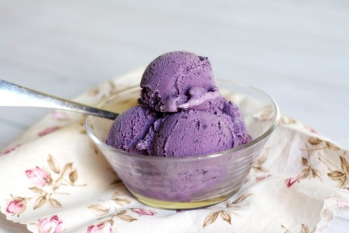

Blueberry Chocolate
Ingredients:
- 4 cups fresh or frozen blueberries
- 2 cups sugar
- 2 tablespoons water
- 4 cups half-and-half cream
Directions:
- In a large saucepan, combine the blueberries, sugar and water. Bring to a boil. Reduce heat; simmer, uncovered, until sugar is dissolved and berries are softened. Strain mixture; discard seeds and skins. Stir in cream. Cover and refrigerate overnight.
- Pour custard into cylinder of ice cream freezer; freeze according to the manufacturers directions. Transfer ice cream to freezer containers, allowing headspace for expansion. Freeze 2-4 hours or until firm. Yield: about 1-3/4 quarts.